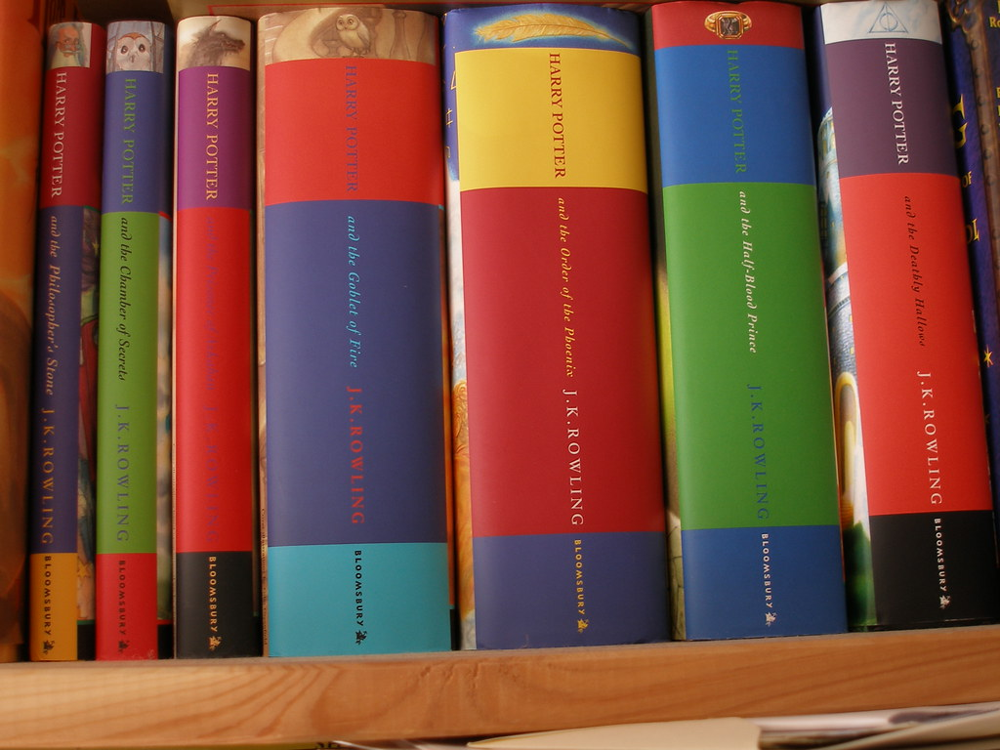

Top Three Book Review
This is a website dedicated to reviews of my top three favorite books. Since these are my favorite I have read them all multiple times.
I read a lot of books. All kinds of books: classics, science fiction, fantasy, biographies, etc. I love stories. Nothing drives me more crazy than when an author has a great underlying idea but the rest of the book is absolute rubbish. The main idea is always the hardest part and I feel like its just a waste when this happens.

First Book Review: Sherlock Holmes
These books are by far my absolute all time favorite books. I have loved Sherlock Holmes since I was a child reading the child versions of the detective. I don't remember when I first read the collection of stories all the way through, but I have loved them since I was first able to read them all. To me, Sherlock Holmes is everything a detective should be, and thats including his vices.
The stories are broken up into two different types. The majority are novellas, short and to the point, but there are several full length stories as well. I love both. Then the novellas are broken up into collections, depending upon when they were written. The first collection is The Adventures of Sherlock Holmes, followed by the Memoirs of Sherlock Holmes, The Return of Sherlock Holmes, His Last Bow, and finally The Case Book of Sherlock Holmes. If you buy read the collection, you can get the volumes that include the full length stories in the correct order too. They are all told from the perspective of Watson, with the exception of a few that are told by Sherlock himself.
I love these books for Sherlock. He is a great thinker and works through all the steps, but he is also very human. He has flaws and there are times that he is wrong. He understands that he operates outside the law and therefore has times where he enacts his personal sense of justice. There are times that he laughs when he is wrong, and actually is a very kind person, unless he is dealing with someone who doesn't deserve it.
I also think its great that he doesn't operate off who pays the best. It's the case that matters. He doesn't care if the person is rich or poor, he likes the puzzle. In fact, in one of the stories, the victim turns out to be in on the whole thing, and before unmasking him Sherlock charges him the full fee and gives him a dressing down for the way the guy treated his own son.
Take my advice, don't watch any of the films or shows until reading the books, as none of them compare. The only one that has ever come close is Sherlock the BBC TV Show. I highly recommend these stories to anyone who loves detective fiction.
Sir Arthur Conan Doyle's Wikipedia Page

Second Book Review: The Harry Potter Series
My sister and I were given the first two Harry Potter books right after the Second book was published. I have not been able to put them down since. These are by far my favorite fantasy books and I have multiple publications of them on my bookshelves. I was thoroughly upset when I realized that I was already eleven, and thus wasn't going to be receiving my own letter.
The series is about an orphan boy who discovers his family history and goes on to play an integral role in saving the world from a truly despicable character. Growing up with an aunt and uncle who dislike him, a cousin that beats him up and less than ideal sleeping conditions, Harry Potter thinks he is just a normal boy. Then comes his eleventh birthday and everything changes. Thrust into a world he knows nothing about, with only his wits and a few helping friends of his parents, Harry must learn on his feet. The seven books describe his time at school and learning to navigate the wizarding world.
I have yet to find an author that can weave a story like JK Rowling can. These books envelop you in a world that is just magnificent and magical. These are the books I turn to when I am in need of magic in the world. The world development is so intricate and well thoughout, it was hard to believe that she had never written before. I was one of those children that begged their parents to get the book right at midnight when it released, and would finish it by sunrise the next day. I loved reading those and just falling into the world, not coming out until I knew where it ended and the next book would pick up.
These characters were so alive. They acted as real people would, loved as real people would, and felt loss like real people would. It was very hard to remember that Harry was just a child and that he didnt have his parents to consult when in doubt. I couldn't even imagine being in his shoes. I loved characters, and hated them, and felt for them, like I had never done before in my life.
This was also the first time that writing had just wrapped me up in a comfortable world and whisked me away. I would read for hours without even realizing 30 minutes had passed. I felt like I was actually in the book, expereincing these things, laughing with them crying with them, and living with them. I was so sad when I got to the end because it felt like it was part of my life, I would go to Hogwarts, and learn Defense Against the Dark Arts, eat the sweets on the train, and learn how to fly.
I recommend these books to anyone who is a lover of fantasy books.
JK Rowling's Wikipedia Page

Third Book Review: The Code of the Woosters
PG Wodehouse is a genius! This book was on my to-read list for years. Always one that was lurking in the background and I kept putting it off, opting to re-read Sherlock Holmes or some other book I stumbled across. Now that I have read it I am just sorry it took me so long to read!
The story centers around Bertie Wooster and his man Jeeves. This book series is actually where 'the butler' Jeeves comes from, and now I fully understand why he is so popular. Bertie is roped into sneering at a silver cow creamer, in order to help his aunt secure funding for an author for her magazine. In the process of doing so, he runs across a disagreeable person from his past and shenanigans ensue. Since Bertie is a stand up guy, and cares for his family and friends, he winds up at this person's house, wherin he is accused of stealing a policeman's helmet, attempts to keep his friend's journal from falling in the wrong hands, and tries to keep two marriage engagements from falling apart.
I have always been a fan of British humour, and thus absolutely loved this book. The twists and turns kept me engaged throughout and several times I laughed out loud. Wodehouse's writing is truly top notch. He does a superb job developing his characters and the story just carries you right through to the end.
I felt true pity for Bertie half way through the book. I must say, if I were in his position, I probably would have left well enough alone, and gone on the round-the-world holiday that Jeeves was pushing from the very beginning. Bertie's character was so well developed that he was consistent in his responses and never once did I think he might actually leave someone to their doom. My other favorite character is the Aunt. She is truly just herself 100% of the time and ultimately shows Bertie just how much she cares for him. I must say one of my favorite parts is when they start throwing and destroying the porcelain decore from the fireplace mantle.
The well developed story is an enjoyable read. There are many twists and turns that leave you wondering what is going to happen next, never guessing at what actually happens. Wodehouse uses creative and intelligent British humour to keep the reader entertained and engaged. I highly recommend this book to everyone!
PG Wodehouse's Wikipedia Page

About Me
I am an avid reader. I do not remember my first book, but I know I have enjoyed reading for as long as I can remember. I have always devoured books. In my opinion there is nothing better than your imagination soaring while you experience a grand story. I get lost and can't put the book down until I know what happens next.
With a propensity to finish 300 page books in a night, I started to wonder how many I could do in a year. Three years ago I was able to achieve my goal of reading 100 books in a year. I must take this time to clarify, I wasn't going for quantity, rather, I knew it was time to branch out my choice of books. I found myself reading the same books over and over again, and decided it was time to explore others.
When I started down that path, I hadn't truly realized just how many 100 books were. I started by pulling down all the books from my bookshelf I hadn't gotten around to reading. The pile was huge, I felt I had really got a firm starting point. Imagine my surprise when it was only 34 books! 34!
I knew I needed to get crafty. After all, this was my chance to branch out, and get out of my book rut. I felt renewed and very excited. I started researching lists and came across a few that I chose to work from -- for the most part. The first list is the BBC Top 100 books, the next is the Rory Gilmore Reading list, and the final is 1001 Books You Must Read Before You Die.
Now we are getting to the real meat. Because, something funny about me is that I don't like to do anything in anyone else's form. Where is the fun in that? I like to be out of the box, off the page, out of the line, and dancing on my head if possible. So I determined to build my own collection. I collated a list from these three lists along with books that I had always wanted to read. All those books that I never got around to, the ones that I liked the idea of, but never was able to. I left no stone unturned, allowed no qualms to slow me down, and left no book un-investigated.
It was due to this attitude that I was finally able to read books like Pride and Prejudice, the whole series of Unfortunate Events, Bridget Jones' Diary, Jonathan Strange and Mr. Norrell, all of the Chronicles of Narnia books', Anna Karenina, and even the Winnie the Pooh books. You see, by building my own list, I was able to truly enjoy books again -- even those I didn't like (such as Anna Karenia, a subject for another time.)
Having achieved my goal, I am extremely proud of my approach and execution. I now read a lot more than I was before, but I have yet to challenge my mind in that way again. I may do so again in the future, but for now, I will continue reading and exploring stories as they pop up.